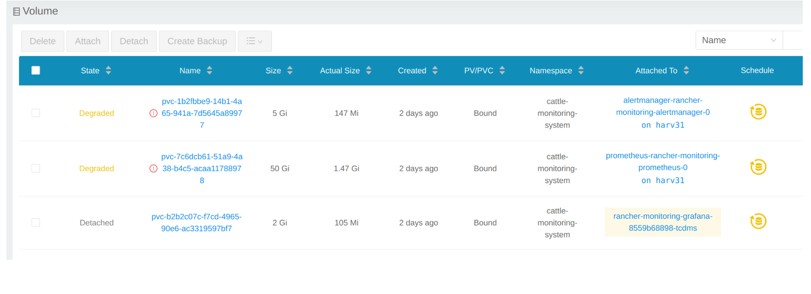
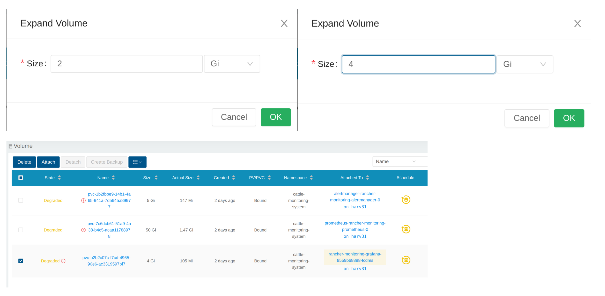

|
Este documento ha sido traducido utilizando tecnología de traducción automática. Si bien nos esforzamos por proporcionar traducciones precisas, no ofrecemos garantías sobre la integridad, precisión o confiabilidad del contenido traducido. En caso de discrepancia, la versión original en inglés prevalecerá y constituirá el texto autorizado. |
Problemas de monitorización
La monitorización es inutilizable
Cuando el SUSE Virtualization Panel de control no muestra ninguna métrica de monitorización, puede deberse a las siguientes razones.
La monitorización es inutilizable debido a que el Pod está atascado en estado Terminating
SUSE VirtualizationLos pods de monitorización se despliegan aleatoriamente en los nodos del clúster. Cuando el nodo que aloja los pods se cae accidentalmente, los pods relacionados pueden quedar atascados en el estado Terminating, lo que hace que la monitorización sea inutilizable desde la WebUI.
$ kubectl get pods -n cattle-monitoring-system
NAMESPACE NAME READY STATUS RESTARTS AGE
cattle-monitoring-system prometheus-rancher-monitoring-prometheus-0 3/3 Terminating 0 3d23h
cattle-monitoring-system rancher-monitoring-admission-create-fwjn9 0/1 Terminating 0 137m
cattle-monitoring-system rancher-monitoring-crd-create-9wtzf 0/1 Terminating 0 137m
cattle-monitoring-system rancher-monitoring-grafana-d9c56d79b-ph4nz 3/3 Terminating 0 3d23h
cattle-monitoring-system rancher-monitoring-grafana-d9c56d79b-t24sz 0/3 Init:0/2 0 132m
cattle-monitoring-system rancher-monitoring-kube-state-metrics-5bc8bb48bd-nbd92 1/1 Running 4 4d1h
...La monitorización se puede recuperar utilizando comandos de CLI para forzar la eliminación de los pods relacionados. El clúster volverá a desplegar nuevos pods para reemplazarlos.
# Delete each none-running Pod in namespace cattle-monitoring-system.
$ kubectl delete pod --force -n cattle-monitoring-system prometheus-rancher-monitoring-prometheus-0
pod "prometheus-rancher-monitoring-prometheus-0" force deleted
$ kubectl delete pod --force -n cattle-monitoring-system rancher-monitoring-admission-create-fwjn9
$ kubectl delete pod --force -n cattle-monitoring-system rancher-monitoring-crd-create-9wtzf
$ kubectl delete pod --force -n cattle-monitoring-system rancher-monitoring-grafana-d9c56d79b-ph4nz
$ kubectl delete pod --force -n cattle-monitoring-system rancher-monitoring-grafana-d9c56d79b-t24szEspera unos minutos para que se creen y preparen los nuevos pods para que el panel de monitorización sea utilizable de nuevo.
$ kubectl get pods -n cattle-monitoring-system
NAME READY STATUS RESTARTS AGE
prometheus-rancher-monitoring-prometheus-0 0/3 Init:0/1 0 98s
rancher-monitoring-grafana-d9c56d79b-cp86w 0/3 Init:0/2 0 27s
...
$ kubectl get pods -n cattle-monitoring-system
NAME READY STATUS RESTARTS AGE
prometheus-rancher-monitoring-prometheus-0 3/3 Running 0 7m57s
rancher-monitoring-grafana-d9c56d79b-cp86w 3/3 Running 0 6m46s
...Expandir tamaño de PV/Volumen
SUSE Virtualization integra SUSE Storage como el proveedor de almacenamiento predeterminado.
SUSE VirtualizationLa monitorización utiliza Volumen Persistente (PV) para almacenar datos en ejecución. Cuando un clúster ha estado funcionando durante un cierto tiempo, el Volumen Persistente puede necesitar expandir su tamaño.
Para información sobre cómo aumentar el tamaño del volumen, consulta Expansión de Volumen en la documentación de SUSE Storage.
Ver Volumen
Desde la UI embebida de SUSE Storage
Accede a la UI embebida de SUSE Storage según este documento.
La vista predeterminada del SUSE Storage panel.

Haz clic en Volume para listar todos los volúmenes existentes.

Desde CLI
También puedes usar kubectl para obtener todos los volúmenes.
# kubectl get pvc -A NAMESPACE NAME STATUS VOLUME CAPACITY ACCESS MODES STORAGECLASS AGE cattle-monitoring-system alertmanager-rancher-monitoring-alertmanager-db-alertmanager-rancher-monitoring-alertmanager-0 Bound pvc-1b2fbbe9-14b1-4a65-941a-7d5645a89977 5Gi RWO harvester-longhorn 43h cattle-monitoring-system prometheus-rancher-monitoring-prometheus-db-prometheus-rancher-monitoring-prometheus-0 Bound pvc-7c6dcb61-51a9-4a38-b4c5-acaa11788978 50Gi RWO harvester-longhorn 43h cattle-monitoring-system rancher-monitoring-grafana Bound pvc-b2b2c07c-f7cd-4965-90e6-ac3319597bf7 2Gi RWO harvester-longhorn 43h # kubectl get volume -A NAMESPACE NAME STATE ROBUSTNESS SCHEDULED SIZE NODE AGE longhorn-system pvc-1b2fbbe9-14b1-4a65-941a-7d5645a89977 attached degraded 5368709120 harv31 43h longhorn-system pvc-7c6dcb61-51a9-4a38-b4c5-acaa11788978 attached degraded 53687091200 harv31 43h longhorn-system pvc-b2b2c07c-f7cd-4965-90e6-ac3319597bf7 attached degraded 2147483648 harv31 43h
Reducir una ampliación
Para desacoplar el Volume, necesitas reducir la deployment que utiliza el Volume.
El ejemplo a continuación es contra el PVC reclamado por rancher-monitoring-grafana.
Encuentra el deployment en el espacio de nombres cattle-monitoring-system.
# kubectl get deployment -n cattle-monitoring-system NAME READY UP-TO-DATE AVAILABLE AGE rancher-monitoring-grafana 1/1 1 1 43h // target deployment rancher-monitoring-kube-state-metrics 1/1 1 1 43h rancher-monitoring-operator 1/1 1 1 43h rancher-monitoring-prometheus-adapter 1/1 1 1 43h
Reduce la ampliación rancher-monitoring-grafana a 0.
# kubectl scale --replicas=0 deployment/rancher-monitoring-grafana -n cattle-monitoring-system
Verifica la ampliación y el volumen.
# kubectl get deployment -n cattle-monitoring-system NAME READY UP-TO-DATE AVAILABLE AGE rancher-monitoring-grafana 0/0 0 0 43h // scaled down rancher-monitoring-kube-state-metrics 1/1 1 1 43h rancher-monitoring-operator 1/1 1 1 43h rancher-monitoring-prometheus-adapter 1/1 1 1 43h # kubectl get volume -A NAMESPACE NAME STATE ROBUSTNESS SCHEDULED SIZE NODE AGE longhorn-system pvc-1b2fbbe9-14b1-4a65-941a-7d5645a89977 attached degraded 5368709120 harv31 43h longhorn-system pvc-7c6dcb61-51a9-4a38-b4c5-acaa11788978 attached degraded 53687091200 harv31 43h longhorn-system pvc-b2b2c07c-f7cd-4965-90e6-ac3319597bf7 detached unknown 2147483648 43h // volume is detached
Expandir volumen
En la interfaz de usuario de SUSE Storage, el volumen relacionado se convierte en Detached. Haz clic en el icono en la columna Operation y selecciona Expand Volume.

Introduce un nuevo tamaño y SUSE Storage expandirá el volumen a este tamaño.

Aumentar una ampliación
Después de que el Volume se expanda al tamaño objetivo, necesitas aumentar la ampliación mencionada anteriormente a sus réplicas originales. Para el ejemplo anterior de rancher-monitoring-grafana, las réplicas originales son 1.
# kubectl scale --replicas=1 deployment/rancher-monitoring-grafana -n cattle-monitoring-system
Verifica la ampliación nuevamente.
# kubectl get deployment -n cattle-monitoring-system NAME READY UP-TO-DATE AVAILABLE AGE rancher-monitoring-grafana 1/1 1 1 43h // scaled up rancher-monitoring-kube-state-metrics 1/1 1 1 43h rancher-monitoring-operator 1/1 1 1 43h rancher-monitoring-prometheus-adapter 1/1 1 1 43h
El Volume está adjunto al nuevo POD.

Hasta ahora, el Volume se ha expandido al nuevo tamaño y el POD lo está utilizando sin problemas.
Error al habilitar el complemento rancher-monitoring
Puedes encontrar esto cuando instalas SUSE Virtualization v1.3.0 o posterior en un clúster con el tamaño mínimo de disco requerido.
Reproducir pasos
-
Instala el SUSE Virtualization clúster.
-
Habilita el
rancher-monitoringcomplemento, observarás:-
El POD
prometheus-rancher-monitoring-prometheus-0en el espacio de nombrescattle-monitoring-systemno puede iniciarse debido a que el PVC adjunto ha fallado.$ kubectl get pods -n cattle-monitoring-system NAME READY STATUS RESTARTS AGE alertmanager-rancher-monitoring-alertmanager-0 2/2 Running 0 3m22s helm-install-rancher-monitoring-4b5mx 0/1 Completed 0 3m41s prometheus-rancher-monitoring-prometheus-0 0/3 Init:0/1 0 3m21s // stuck in this status rancher-monitoring-grafana-d6f466988-hgpkb 4/4 Running 0 3m26s rancher-monitoring-kube-state-metrics-7659b76cc4-66sr7 1/1 Running 0 3m26s rancher-monitoring-operator-595476bc84-7hdxj 1/1 Running 0 3m25s rancher-monitoring-prometheus-adapter-55dc9ccd5d-pcrpk 1/1 Running 0 3m26s rancher-monitoring-prometheus-node-exporter-pbzv4 1/1 Running 0 3m26s $ kubectl describe pod -n cattle-monitoring-system prometheus-rancher-monitoring-prometheus-0 Name: prometheus-rancher-monitoring-prometheus-0 Namespace: cattle-monitoring-system Priority: 0 Service Account: rancher-monitoring-prometheus ... Events: Type Reason Age From Message ---- ------ ---- ---- ------- Warning FailedScheduling 3m48s (x3 over 4m15s) default-scheduler 0/1 nodes are available: pod has unbound immediate PersistentVolumeClaims. preemption: 0/1 nodes are available: 1 Preemption is not helpful for scheduling.. Normal Scheduled 3m44s default-scheduler Successfully assigned cattle-monitoring-system/prometheus-rancher-monitoring-prometheus-0 to harv41 Warning FailedMount 101s kubelet Unable to attach or mount volumes: unmounted volumes=[prometheus-rancher-monitoring-prometheus-db], unattached volumes=[prometheus-rancher-monitoring-prometheus-db], failed to process volumes=[]: timed out waiting for the condition Warning FailedAttachVolume 90s (x9 over 3m42s) attachdetach-controller AttachVolume.Attach failed for volume "pvc-bbe8760d-926c-484a-851c-b8ec29ae05c0" : rpc error: code = Aborted desc = volume pvc-bbe8760d-926c-484a-851c-b8ec29ae05c0 is not ready for workloads $ kubectl get pvc -A NAMESPACE NAME STATUS VOLUME CAPACITY ACCESS MODES STORAGECLASS AGE cattle-monitoring-system prometheus-rancher-monitoring-prometheus-db-prometheus-rancher-monitoring-prometheus-0 Bound pvc-bbe8760d-926c-484a-851c-b8ec29ae05c0 50Gi RWO harvester-longhorn 7m12s $ kubectl get volume -A NAMESPACE NAME DATA ENGINE STATE ROBUSTNESS SCHEDULED SIZE NODE AGE longhorn-system pvc-bbe8760d-926c-484a-851c-b8ec29ae05c0 v1 detached unknown 53687091200 6m55s -
Longhorn Manager no puede programar la réplica.
$ kubectl logs -n longhorn-system longhorn-manager-bf65b | grep "pvc-bbe8760d-926c-484a-851c-b8ec29ae05c0" time="2024-02-19T10:12:56Z" level=error msg="There's no available disk for replica pvc-bbe8760d-926c-484a-851c-b8ec29ae05c0-r-dcb129fd, size 53687091200" func="schedule r.(*ReplicaScheduler).ScheduleReplica" file="replica_scheduler.go:95" time="2024-02-19T10:12:56Z" level=warning msg="Failed to schedule replica" func="controller.(*VolumeController).reconcileVolumeCondition" file="volume_controller.go:169 4" accessMode=rwo controller=longhorn-volume frontend=blockdev migratable=false node=harv41 owner=harv41 replica=pvc-bbe8760d-926c-484a-851c-b8ec29ae05c0-r-dcb129fd sta te= volume=pvc-bbe8760d-926c-484a-851c-b8ec29ae05c0 ...
-
Solución
-
Desactiva el complemento
rancher-monitoringsi ya lo has habilitado.Todos los pods en
cattle-monitoring-systemhan sido eliminados, pero los PVCs se mantienen. Para obtener más información, consulta [Complementos].$ kubectl get pods -n cattle-monitoring-system No resources found in cattle-monitoring-system namespace. $ kubectl get pvc -n cattle-monitoring-system NAME STATUS VOLUME CAPACITY ACCESS MODES STORAGECLASS AGE alertmanager-rancher-monitoring-alertmanager-db-alertmanager-rancher-monitoring-alertmanager-0 Bound pvc-cea6316e-f74f-4771-870b-49edb5442819 5Gi RWO harvester-longhorn 14m prometheus-rancher-monitoring-prometheus-db-prometheus-rancher-monitoring-prometheus-0 Bound pvc-bbe8760d-926c-484a-851c-b8ec29ae05c0 50Gi RWO harvester-longhorn 14m
-
Elimina el PVC llamado
prometheus, pero conserva el PVC llamadoalertmanager.$ kubectl delete pvc -n cattle-monitoring-system prometheus-rancher-monitoring-prometheus-db-prometheus-rancher-monitoring-prometheus-0 persistentvolumeclaim "prometheus-rancher-monitoring-prometheus-db-prometheus-rancher-monitoring-prometheus-0" deleted $ kubectl get pvc -n cattle-monitoring-system NAME STATUS VOLUME CAPACITY ACCESS MODES STORAGECLASS AGE alertmanager-rancher-monitoring-alertmanager-db-alertmanager-rancher-monitoring-alertmanager-0 Bound pvc-cea6316e-f74f-4771-870b-49edb5442819 5Gi RWO harvester-longhorn 16m
-
En la pantalla de Complementos de la interfaz de usuario SUSE Virtualization, selecciona ⋮ (icono de menú) y luego selecciona Editar YAML.

-
Como se indica a continuación, cambia las dos ocurrencias del número
50a30bajo prometheusSpec, y luego guarda. La funciónprometheusutilizará un disco de 30GiB para almacenar datos.
Alternativamente, puedes usar
kubectlpara editar el objeto.kubectl edit addons.harvesterhci.io -n cattle-monitoring-system rancher-monitoringretentionSize: 50GiB // Change 50 to 30 storageSpec: volumeClaimTemplate: spec: accessModes: - ReadWriteOnce resources: requests: storage: 50Gi // Change 50 to 30 storageClassName: harvester-longhorn -
Habilita el complemento
rancher-monitoringy espera unos minutos. -
Todos los pods se han desplegado con éxito, y la función
rancher-monitoringestá disponible.$ kubectl get pods -n cattle-monitoring-system NAME READY STATUS RESTARTS AGE alertmanager-rancher-monitoring-alertmanager-0 2/2 Running 0 3m52s helm-install-rancher-monitoring-s55tq 0/1 Completed 0 4m17s prometheus-rancher-monitoring-prometheus-0 3/3 Running 0 3m51s rancher-monitoring-grafana-d6f466988-hkv6f 4/4 Running 0 3m55s rancher-monitoring-kube-state-metrics-7659b76cc4-ght8x 1/1 Running 0 3m55s rancher-monitoring-operator-595476bc84-r96bp 1/1 Running 0 3m55s rancher-monitoring-prometheus-adapter-55dc9ccd5d-vtssc 1/1 Running 0 3m55s rancher-monitoring-prometheus-node-exporter-lgb88 1/1 Running 0 3m55s
El estado del ManagedChart rancher-monitoring-crd es Modified
Descripción del problema
En ciertas situaciones, el estado del rancher-monitoring-crd objeto ManagedChart cambia a Modified (con el mensaje …rancher-monitoring-crd-manager missing…).
Ejemplo:
$ kubectl get managedchart rancher-monitoring-crd -n fleet-local -o yaml
apiVersion: management.cattle.io/v3
kind: ManagedChart
...
spec:
chart: rancher-monitoring-crd
defaultNamespace: cattle-monitoring-system
paused: false
releaseName: rancher-monitoring-crd
repoName: harvester-charts
targets:
- clusterName: local
clusterSelector:
matchExpressions:
- key: provisioning.cattle.io/unmanaged-system-agent
operator: DoesNotExist
version: 102.0.0+up40.1.2
...
status:
conditions:
- lastUpdateTime: "2024-02-22T14:03:11Z"
message: Modified(1) [Cluster fleet-local/local]; clusterrole.rbac.authorization.k8s.io
rancher-monitoring-crd-manager missing; clusterrolebinding.rbac.authorization.k8s.io
rancher-monitoring-crd-manager missing; configmap.v1 cattle-monitoring-system/rancher-monitoring-crd-manifest
missing; serviceaccount.v1 cattle-monitoring-system/rancher-monitoring-crd-manager
missing
status: "False"
type: Ready
- lastUpdateTime: "2024-02-22T14:03:11Z"
status: "True"
type: Processed
- lastUpdateTime: "2024-04-02T07:45:26Z"
status: "True"
type: Defined
display:
readyClusters: 0/1
state: Modified
...El ManagedChart objeto tiene un objeto en sentido descendente llamado Bundle, que tiene información similar.
Ejemplo:
$ kubectl get bundles -A
NAMESPACE NAME BUNDLEDEPLOYMENTS-READY STATUS
fleet-local fleet-agent-local 1/1
fleet-local local-managed-system-agent 1/1
fleet-local mcc-harvester 1/1
fleet-local mcc-harvester-crd 1/1
fleet-local mcc-local-managed-system-upgrade-controller 1/1
fleet-local mcc-rancher-logging-crd 1/1
fleet-local mcc-rancher-monitoring-crd 0/1 Modified(1) [Cluster fleet-local/local]; clusterrole.rbac.authorization.k8s.io rancher-monitoring-crd-manager missing; clusterrolebinding.rbac.authorization.k8s.io rancher-monitoring-crd-manager missing; configmap.v1 cattle-monitoring-system/rancher-monitoring-crd-manifest missing; serviceaccount.v1 cattle-monitoring-system/rancher-monitoring-crd-manager missingCuando existe el problema y tú inicias una actualización, SUSE Virtualization puede devolver el siguiente mensaje de error: admission webhook "validator.harvesterhci.io" denied the request: managed chart rancher-monitoring-crd is not ready, please wait for it to be ready.
Además, cuando busques los objetos marcados como missing, encontrarás que existen en el clúster.
Ejemplo:
$ kubectl get clusterrole rancher-monitoring-crd-manager
apiVersion: rbac.authorization.k8s.io/v1
kind: ClusterRole
metadata:
annotations:
meta.helm.sh/release-name: rancher-monitoring-crd
meta.helm.sh/release-namespace: cattle-monitoring-system
creationTimestamp: "2023-01-09T11:04:33Z"
labels:
app: rancher-monitoring-crd-manager
app.kubernetes.io/managed-by: Helm
name: rancher-monitoring-crd-manager
...
rules:
- apiGroups:
- apiextensions.k8s.io
resources:
- customresourcedefinitions
verbs:
- create
- get
- patch
- delete
$ kubectl get clusterrolebinding rancher-monitoring-crd-manager
apiVersion: rbac.authorization.k8s.io/v1
kind: ClusterRoleBinding
metadata:
annotations:
meta.helm.sh/release-name: rancher-monitoring-crd
meta.helm.sh/release-namespace: cattle-monitoring-system
creationTimestamp: "2023-01-09T11:04:33Z"
labels:
app: rancher-monitoring-crd-manager
app.kubernetes.io/managed-by: Helm
name: rancher-monitoring-crd-manager
...
roleRef:
apiGroup: rbac.authorization.k8s.io
kind: ClusterRole
name: rancher-monitoring-crd-manager
subjects:
- kind: ServiceAccount
name: rancher-monitoring-crd-manager
namespace: cattle-monitoring-system
$ kubectl get configmap -n cattle-monitoring-system rancher-monitoring-crd-manifest
apiVersion: v1
data:
crd-manifest.tgz.b64: ...
kind: ConfigMap
metadata:
annotations:
meta.helm.sh/release-name: rancher-monitoring-crd
meta.helm.sh/release-namespace: cattle-monitoring-system
creationTimestamp: "2023-01-09T11:04:33Z"
labels:
app.kubernetes.io/managed-by: Helm
name: rancher-monitoring-crd-manifest
namespace: cattle-monitoring-system
...
$ kubectl get ServiceAccount -n cattle-monitoring-system rancher-monitoring-crd-manager
apiVersion: v1
kind: ServiceAccount
metadata:
annotations:
meta.helm.sh/release-name: rancher-monitoring-crd
meta.helm.sh/release-namespace: cattle-monitoring-system
creationTimestamp: "2023-01-09T11:04:33Z"
labels:
app: rancher-monitoring-crd-manager
app.kubernetes.io/managed-by: Helm
name: rancher-monitoring-crd-manager
namespace: cattle-monitoring-system
...Motivo principal
Los objetos que están marcados como missing no tienen las anotaciones y etiquetas relacionadas requeridas por el objeto ManagedChart.
Ejemplo:
apiVersion: rbac.authorization.k8s.io/v1
kind: ClusterRole
metadata:
annotations:
meta.helm.sh/release-name: rancher-monitoring-crd
meta.helm.sh/release-namespace: cattle-monitoring-system
objectset.rio.cattle.io/id: default-mcc-rancher-monitoring-crd-cattle-fleet-local-system # This required item is not in the above object.
creationTimestamp: "2024-04-03T10:23:55Z"
labels:
app: rancher-monitoring-crd-manager
app.kubernetes.io/managed-by: Helm
objectset.rio.cattle.io/hash: 2da503261617e9ea2da822d2da7cdcfccad847a9 # This required item is not in the above object.
name: rancher-monitoring-crd-manager
...
rules:
- apiGroups:
- apiextensions.k8s.io
resources:
- customresourcedefinitions
verbs:
- create
- get
- patch
- delete
- updateSolución
-
Aplica un parche al objeto ClusterRole
rancher-monitoring-crd-managerpara añadir la operaciónupdate.$ cat > patchrules.yaml << EOF rules: - apiGroups: - apiextensions.k8s.io resources: - customresourcedefinitions verbs: - create - get - patch - delete - update EOF $ kubectl patch ClusterRole rancher-monitoring-crd-manager --patch-file ./patchrules.yaml --type merge $ rm ./patchrules.yaml -
Aplica un parche a los objetos marcados como
missingpara añadir las anotaciones y etiquetas requeridas.$ cat > patchhash.yaml << EOF metadata: annotations: objectset.rio.cattle.io/id: default-mcc-rancher-monitoring-crd-cattle-fleet-local-system labels: objectset.rio.cattle.io/hash: 2da503261617e9ea2da822d2da7cdcfccad847a9 EOF $ kubectl patch ClusterRole rancher-monitoring-crd-manager --patch-file ./patchhash.yaml --type merge $ kubectl patch ClusterRoleBinding rancher-monitoring-crd-manager --patch-file ./patchhash.yaml --type merge $ kubectl patch ServiceAccount rancher-monitoring-crd-manager -n cattle-monitoring-system --patch-file ./patchhash.yaml --type merge $ kubectl patch ConfigMap rancher-monitoring-crd-manifest -n cattle-monitoring-system --patch-file ./patchhash.yaml --type merge $ rm ./patchhash.yaml -
Revisa el
rancher-monitoring-crdobjeto ManagedChart.Después de unos segundos, el estado del
rancher-monitoring-crdobjeto ManagedChart cambia aReady.$ kubectl get managedchart -n fleet-local rancher-monitoring-crd -oyaml apiVersion: management.cattle.io/v3 kind: ManagedChart metadata: ... name: rancher-monitoring-crd namespace: fleet-local ... status: conditions: - lastUpdateTime: "2024-04-22T21:41:44Z" status: "True" type: Ready ...Además, los indicadores de error ya no se muestran para los objetos descendentes.
$ kubectl bundle -A NAMESPACE NAME BUNDLEDEPLOYMENTS-READY STATUS fleet-local fleet-agent-local 1/1 fleet-local local-managed-system-agent 1/1 fleet-local mcc-harvester 1/1 fleet-local mcc-harvester-crd 1/1 fleet-local mcc-local-managed-system-upgrade-controller 1/1 fleet-local mcc-rancher-logging-crd 1/1 fleet-local mcc-rancher-monitoring-crd 1/1 -
(Opcional) Reintenta la actualización (si anteriormente fue fallida debido a este problema).
Algunos pods del complemento rancher-monitoring son terminados abruptamente
Descripción del problema
Cuando el complemento rancher-monitoring está habilitado, los pods relacionados con Prometheus, Alertmanager y Grafana son terminados poco después de ser creados.
Ejemplo:
$ kubectl -n cattle-monitoring-system get pods,svc,ep,deploy,pvc,sts,prometheus,alertmanager | grep -E 'stateful|deploy'
deployment.apps/rancher-monitoring-grafana 0/0 0 0 7h52m
deployment.apps/rancher-monitoring-kube-state-metrics 1/1 1 1 7h52m
deployment.apps/rancher-monitoring-operator 1/1 1 1 7h52m
deployment.apps/rancher-monitoring-prometheus-adapter 1/1 1 1 7h52m
statefulset.apps/alertmanager-rancher-monitoring-alertmanager 0/0 7h52m
statefulset.apps/prometheus-rancher-monitoring-prometheus 0/0 7h52mLos registros del pod prometheus contienen el mensaje level=warn msg="Received SIGTERM, exiting gracefully…".
...
ts=2025-05-20T05:41:02.847Z caller=kubernetes.go:327 level=info component="discovery manager notify" discovery=kubernetes config=config-0 msg="Using pod service account via in-cluster config"
ts=2025-05-20T05:41:02.880Z caller=main.go:1261 level=info msg="Completed loading of configuration file" filename=/etc/prometheus/config_out/prometheus.env.yaml totalDuration=35.457401ms db_storage=998ns remote_storage=1.45µs web_handler=392ns query_engine=1.095µs scrape=34.384µs scrape_sd=515.81µs notify=10.226µs notify_sd=82.314µs rules=32.514863ms tracing=2.344µs
ts=2025-05-20T05:41:50.044Z caller=main.go:854 level=warn msg="Received SIGTERM, exiting gracefully..."
ts=2025-05-20T05:41:50.044Z caller=main.go:878 level=info msg="Stopping scrape discovery manager..."
ts=2025-05-20T05:41:50.044Z caller=main.go:892 level=info msg="Stopping notify discovery manager..."
...El objeto CRD prometheus incluye `storage-network.settings.harvesterhci.io/replica: "1" ` anotación.
- apiVersion: monitoring.coreos.com/v1
kind: Prometheus
metadata:
annotations:
meta.helm.sh/release-name: rancher-monitoring
meta.helm.sh/release-namespace: cattle-monitoring-system
storage-network.settings.harvesterhci.io/replica: "1"
creationTimestamp: "2025-05-20T06:40:25Z"Los registros del pod Harvester ('ampliación harvester-system/harvester') indican que el intento de cambiar storage-network la configuración fue bloqueado.
...
2025-05-20T08:13:49.842448311Z time="2025-05-20T08:13:49Z" level=info msg="storage network change: {\"vlan\":955,\"clusterNetwork\":\"k8s-storage\",\"range\":\"198.18.2.0/24\"}"
2025-05-20T08:13:49.842476305Z time="2025-05-20T08:13:49Z" level=info msg="rancher monitoring not found. skip"
2025-05-20T08:13:49.842479072Z time="2025-05-20T08:13:49Z" level=info msg="current Grafana replicas: 0"
2025-05-20T08:13:49.842480501Z time="2025-05-20T08:13:49Z" level=info msg="VM import controller no found. skip"
2025-05-20T08:13:49.851381877Z time="2025-05-20T08:13:49Z" level=error msg="error syncing 'storage-network': handler harvester-storage-network-controller: Waiting for all volumes detached: pvc-6f66d234-f9c2-453e-8c17-383d9b489956,pvc-07c626f5-5135-4783-952d-cc20b1607cb5,pvc-1cfd6efe-c928-42e5-a834-8c27ed0e4897,pvc-5ce98d0a-5da1-4f30-af14-a8de29233380,pvc-1c9b7c9a-4943-4462-9082-217f9988cfc5,pvc-e9d92bfd-63c7-4ae3-ba00-1ce209f12caa,pvc-205ba31d-35fb-44f6-a3c4-c53001ec0dd6,pvc-6b5a7d11-7578-4397-9e13-ab475fe91463,pvc-669c69dd-93ad-4304-a340-484f7108362b,pvc-7668c486-b688-4524-b359-0cf9ec21cbc0,pvc-7d294996-821f-4434-ae4f-55a6de67f28c,pvc-216333c6-73f9-4e68-ac8b-53ab95a1f138,pvc-f72ca889-70c9-4dd9-bcec-a17ab65a1df4,pvc-01895fab-12f8-452a-9161-7d3c01e22726,pvc-330caa2d-5fdc-42f2-8c53-c5f80044760f,pvc-9506b7d0-c2d5-41f2-a08b-d7bc22dddb88,pvc-3e2b46d4-c471-44a9-9765-64babdb6ceed,pvc-25fe3372-1802-46d5-abf1-039099c567e2,pvc-b16fb262-cb38-4438-b074-84c7ad080a15,pvc-757c0f22-4ed6-4669-844d-cd7a87ceb26e,pvc-e0d99d8f-581f-4be6-baa3-d345308c9330,pvc-f5e1e19d-3dfb-4be1-9354-c092d7f03009,pvc-383ec26a-51f6-4f9d-8d8a-179651846d92,pvc-0d8f5737-c6e4-4f55-8d19-cf7a785552fc,pvc-5091892e-faf2-47b1-b987-bbde1ab2c13a,pvc-6f0c97ae-dfda-4799-bf26-e85feace5414,pvc-b0f717af-8a79-4c4e-b82e-90dedeae7697,pvc-ffe982d5-5ff1-40aa-a0db-cc10360d2d89,pvc-370757e2-4bce-41e7-b6f7-95aa8a5e8cf1,pvc-5a77d3e3-d555-476c-840f-7b9dadeb7478,pvc-43987c88-99b1-4889-9a47-5261717fe265,pvc-9f675704-9c52-46c2-96bf-2ff83d805383,pvc-d0b4e1d0-9bcd-4a8a-b52c-e1d8062a8099,pvc-a29be31f-531f-409a-bf5a-d267a54e2edb, requeuing"
...Motivo principal
Cuando realizas cambios en la configuración storage-network, el controlador SUSE Virtualization espera a que los volúmenes adjuntos sean desasignados antes de aplicar los cambios. Además, el controlador termina automáticamente los pods relacionados con Prometheus, Alertmanager y Grafana porque esos pods utilizan volúmenes para almacenar datos.
Este proceso suele tardar poco tiempo en completarse, pero puede verse interrumpido cuando ocurre lo siguiente:
-
Los volúmenes adjuntos impiden que el controlador de Harvester aplique los cambios en la configuración.
-
Un usuario o el
monitoring-operatorintenta habilitar el complementorancher-monitoring. -
El controlador de Harvester termina los pods.
Solución
-
Deshabilita el complemento
rancher-monitoring. -
Verifica si la configuración storage-network está habilitada o deshabilitada.
-
Revisa si hay indicadores de error en los registros de los pods de Harvester. Si los volúmenes siguen adjuntos, detén las máquinas virtuales relacionadas hasta que no aparezcan errores después del mensaje
storage network change. -
Habilita el complemento
rancher-monitoring.
SUSE VirtualizationLa interfaz de usuario deja de informar métricas de máquinas virtuales después de la actualización
Descripción del problema
Después de una actualización, SUSE Virtualizationla interfaz de usuario deja de informar métricas de máquinas virtuales mientras que las métricas del clúster siguen disponibles. Deshabilitar y volver a habilitar el complemento rancher-monitoring no resuelve el problema.
El prometheus-kubevirt-rules objeto ServiceMonitor falta en el espacio de nombres cattle-monitoring-system. No puedes añadir este objeto manualmente porque el operador de KubeVirt lo elimina automáticamente.
$ kubectl get servicemonitor -A
NAMESPACE NAME AGE
...
cattle-monitoring-system prometheus-kubevirt-rules 24s // is missing
...Motivo principal
Cuando KubeVirt se instala o actualiza por primera vez, genera un nuevo objeto ConfigMap para almacenar la configuración. Ocurre una condición de carrera dentro del operador de KubeVirt si el rancher-monitoring-operator objeto ServiceAccount falta/no está sincronizado desde el espacio de nombres cattle-monitoring-system durante este proceso. En consecuencia, la configuración de ServiceMonitor puede ser excluida del objeto ConfigMap resultante.
Durante el proceso de actualización, KubeVirt puede determinar incorrectamente el estado de monitorización. Una vez que se genera el objeto ConfigMap, KubeVirt no lo reconcilia ni lo regenera hasta la próxima actualización, a menos que se realice un disparador manual.
Solución
La solución alternativa implica asegurarse de que el rancher-monitoring-operator objeto ServiceAccount exista, eliminar los objetos ConfigMap huérfanos y reiniciar el operador de KubeVirt.
-
Recupera la lista de objetos ConfigMap.
$ kubectl get configmap -n harvester-system -l kubevirt.io/install-strategy NAME DATA AGE kubevirt-install-strategy-zq86d 1 10m
La lista incluye el ConfigMap de la última versión y cualquier objeto legado que sobreviva.
-
Verifica si el último objeto ConfigMap contiene la configuración de ServiceMonitor.
$ kubectl get configmap -n harvester-system kubevirt-install-strategy-zq86d -ojsonpath="{.data.manifests}" | base64 -d | gunzip | grep ServiceMoni -iCuando la salida está vacía, el problema existe en tu entorno.
-
Verifica que los campos
monitorAccountymonitorNamespaceexistan.$ kubectl get kubevirt kubevirt -n harvester-system -oyaml | grep monitoring monitorAccount: rancher-monitoring-operator monitorNamespace: cattle-monitoring-system -
Verifica que el objeto ServiceAccount exista.
Este objeto se crea durante la instalación y no debe ser eliminado.
$ kubectl get serviceaccount -n cattle-monitoring-system rancher-monitoring-operator Error from server (NotFound): serviceaccounts "rancher-monitoring-operator" not found -
Si el objeto ServiceAccount no existe, créalo manualmente. De lo contrario, pasa al siguiente paso.
$ cat > rmo.yaml << 'EOF' apiVersion: v1 kind: ServiceAccount metadata: annotations: meta.helm.sh/release-name: rancher-monitoring meta.helm.sh/release-namespace: cattle-monitoring-system labels: app: rancher-monitoring-operator app.kubernetes.io/component: prometheus-operator app.kubernetes.io/instance: rancher-monitoring app.kubernetes.io/managed-by: Helm app.kubernetes.io/name: rancher-monitoring-prometheus-operator heritage: Helm release: rancher-monitoring name: rancher-monitoring-operator namespace: cattle-monitoring-system EOF $ kubectl create -f rmo.yaml $ kubectl get serviceaccount -n cattle-monitoring-system rancher-monitoring-operator NAME SECRETS AGE rancher-monitoring-operator 0 35s -
Elimina todos los objetos ConfigMap (
kubevirt-install-strategy-*). -
Despliega la
virt-operatorampliación.Kubevirt recrea el ConfigMap.
$ kubectl rollout restart deployment -n harvester-system virt-operator deployment.apps/virt-operator restarted $ kubectl get pods -n harvester-system NAME READY STATUS RESTARTS AGE ... kubevirt-c2053a4889fe65e8d368b5c232901c84fda8debe-jobgddh65r7ws 0/1 Completed 0 6s // the pod exists for a short time ... virt-operator-796bf5fd9b-h56z9 1/1 Running 0 33s $ kubectl get servicemonitor -A NAMESPACE NAME AGE cattle-monitoring-system prometheus-kubevirt-rules 24s // newly created ...